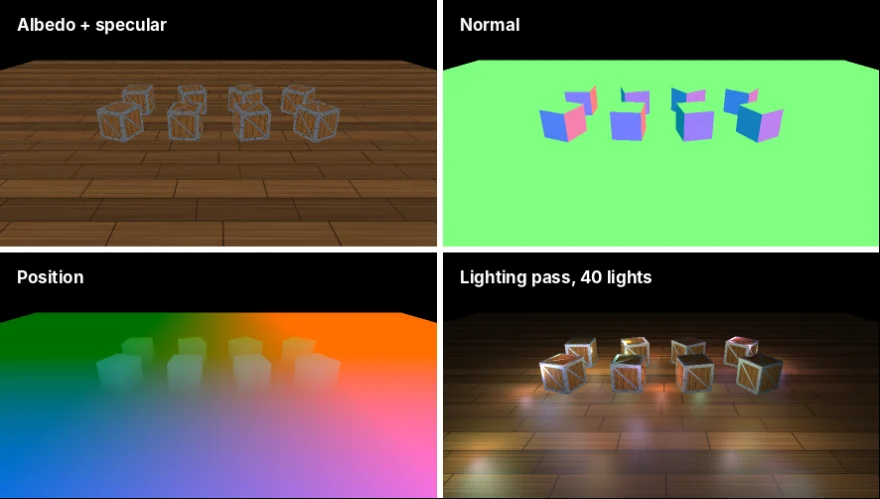

Advanced Lighting
Deferred Shading#
Until now we have used forward rendering: every object is drawn and lit in one go, and every fragment loops over every light. Two things make that wasteful. Fragments that are later covered by something closer were lit for nothing, and the cost grows as objects × lights.
Deferred shading splits rendering into two phases:
- Geometry pass: draw the scene once and store the inputs of lighting, such as position, normal and albedo, in a set of textures called the G-buffer.
- Lighting pass: for each pixel on screen, read the G-buffer and compute lighting once.
Lighting cost becomes pixels × lights and no longer depends on scene complexity. Hundreds of lights become practical.
The G-buffer#
| Attachment | Format | Contents |
|---|---|---|
| 0 | .rgba8Unorm_srgb |
Albedo in rgb, specular strength in a |
| 1 | .rgba16Float |
World-space normal |
| 2 | .rgba16Float |
World-space position |
| depth | .depth32Float |
Depth |
Create each as a texture with [.renderTarget, .shaderRead] usage and attach all three to one render pass. The geometry pass fragment function fills them:
struct GBufferOut {
float4 albedoSpecular [[color(0)]];
float4 normal [[color(1)]];
float4 position [[color(2)]];
};
fragment GBufferOut fragment_gbuffer(VertexOut in [[stage_in]],
texture2d<float> diffuseMap [[texture(0)]],
texture2d<float> specularMap [[texture(1)]],
sampler s [[sampler(0)]]) {
GBufferOut out;
out.albedoSpecular = float4(diffuseMap.sample(s, in.uv).rgb,
specularMap.sample(s, in.uv).r);
out.normal = float4(normalize(in.normal), 0.0);
out.position = float4(in.worldPosition, 1.0);
return out;
}
No lighting happens here. The pass is cheap, and the depth test guarantees that only the nearest surface ends up in each pixel.
Storing position costs a lot of memory. Production renderers reconstruct it from the depth buffer and the inverse view-projection matrix, and pack normals into two channels. Start with the simple layout and optimize later.
The lighting pass#
A full-screen triangle reads the G-buffer and lights every pixel:
fragment float4 fragment_lighting(ScreenOut in [[stage_in]],
constant LightingUniforms &uniforms [[buffer(1)]],
constant PointLight *lights [[buffer(2)]],
texture2d<float> albedoTexture [[texture(0)]],
texture2d<float> normalTexture [[texture(1)]],
texture2d<float> positionTexture [[texture(2)]]) {
uint2 pixel = uint2(in.position.xy);
float4 albedoSpecular = albedoTexture.read(pixel);
float3 normal = normalTexture.read(pixel).xyz;
float3 position = positionTexture.read(pixel).xyz;
float3 viewDir = normalize(uniforms.viewPosition - position);
float3 color = albedoSpecular.rgb * 0.05; // ambient
for (uint i = 0; i < uniforms.lightCount; i++) {
float3 toLight = lights[i].position - position;
float distance = length(toLight);
if (distance > lights[i].radius) { continue; }
float3 lightDir = toLight / distance;
float3 halfway = normalize(lightDir + viewDir);
float attenuation = 1.0 / (1.0 + distance * distance);
float diff = max(dot(normal, lightDir), 0.0);
float spec = pow(max(dot(normal, halfway), 0.0), 32.0) * albedoSpecular.a;
color += (diff * albedoSpecular.rgb + spec) * lights[i].color * attenuation;
}
return float4(color, 1.0);
}
read fetches the exact texel for this pixel with no sampler. The radius check skips lights too far away to matter.

Light volumes#
Looping over all lights for every pixel still wastes work, since most lights reach only a small part of the screen. The refinement is to draw a sphere for each light, sized to its radius, using instancing. Each sphere's fragment function lights only the pixels it covers and adds its result with additive blending (.one, .one). Cull front faces and disable depth writes, so the light still works when the camera is inside the sphere. With volumes, a thousand small lights cost little more than their combined screen area.
Compute the radius from the attenuation: the distance at which the light's contribution falls below a small threshold such as 5/256.
Mixing in forward rendering#
Deferred shading cannot handle transparency, since each pixel stores one surface. The usual structure is:
- Geometry pass, then the lighting pass.
- A forward pass on top for transparent objects, lamps and the skybox.
The forward pass must use the same depth buffer as the geometry pass, so that forward-rendered objects are hidden correctly behind deferred ones. Attach the G-buffer's depth texture to the forward pass with loadAction = .load.
Single-pass deferred on Apple GPUs#
The classic approach stores the whole G-buffer in memory and reads it back in a second pass. On a tile-based GPU that is expensive: every tile has to be written out and loaded again. Apple GPUs offer something better.
A fragment function on Apple silicon can read the current contents of the color attachments it is drawing to. This is called programmable blending or framebuffer fetch. The entire deferred pipeline then fits in one render pass:
- Attachment 0 is the final lit color (the drawable or an HDR texture).
- Attachments 1 to 3 are the G-buffer, created with
storageMode = .memoryless,loadAction = .clearandstoreAction = .dontCare. - First draw the geometry, writing attachments 1 to 3.
- Then, in the same encoder, draw the light volumes with a fragment function that takes the G-buffer as input:
struct LightingIn {
float4 albedoSpecular [[color(1)]];
float4 normal [[color(2)]];
float4 position [[color(3)]];
};
struct LightingOut {
float4 color [[color(0)]];
};
fragment LightingOut fragment_light(LightVolumeOut in [[stage_in]],
LightingIn gbuffer,
constant LightingUniforms &uniforms [[buffer(1)]]) {
float3 normal = gbuffer.normal.xyz;
float3 position = gbuffer.position.xyz;
// ...the same lighting as before
LightingOut out;
out.color = float4(color, 1.0);
return out;
}
The G-buffer never leaves the GPU's tile memory. It consumes no system memory and no bandwidth, which makes deferred shading practical even on phones. On Intel Macs the feature is unavailable, so portable renderers keep the two-pass path as a fallback; check device.supportsFamily(.apple1). Apple's "Rendering a Scene with Deferred Lighting" sample code shows both paths side by side.
Apple GPUs also support tile shaders, compute-like functions that run once per tile in the middle of a render pass. They are used to build per-tile light lists for tiled forward rendering, an alternative that keeps the benefits of forward shading, including MSAA and transparency, with many lights.
Trade-offs#
| Forward | Deferred | |
|---|---|---|
| Many lights | Costly | Cheap |
| Transparency | Works | Needs a forward pass |
| MSAA | Works | Difficult |
| Material variety | Any shader per object | Limited by the G-buffer layout |
| Memory | Low | High, unless memoryless |
Exercises#
- Display each G-buffer texture on screen to verify its contents.
- Scatter 200 small colored lights and compare the frame time with the forward renderer.
- Reconstruct position from depth and remove the position attachment.